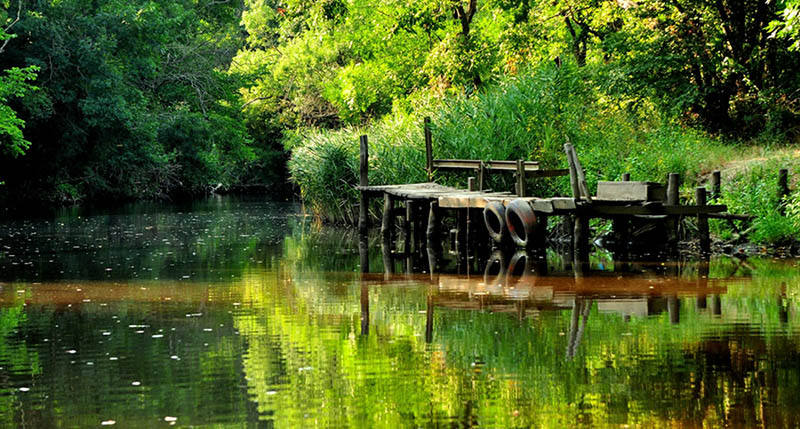
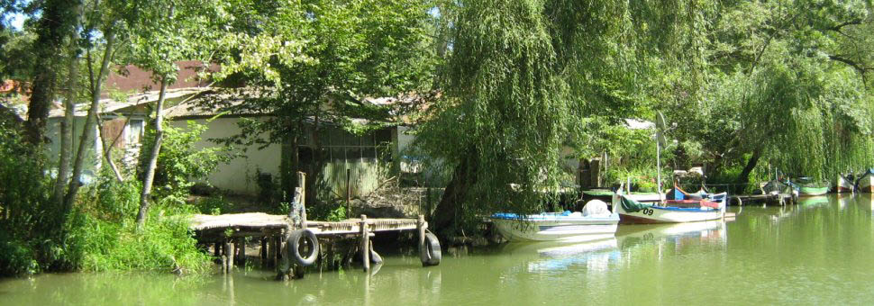
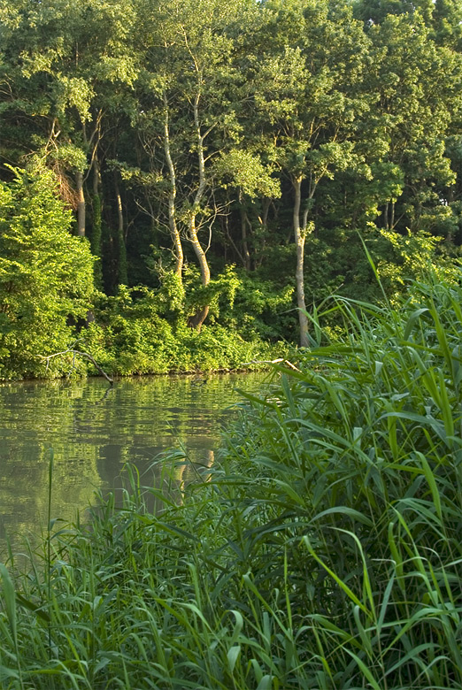
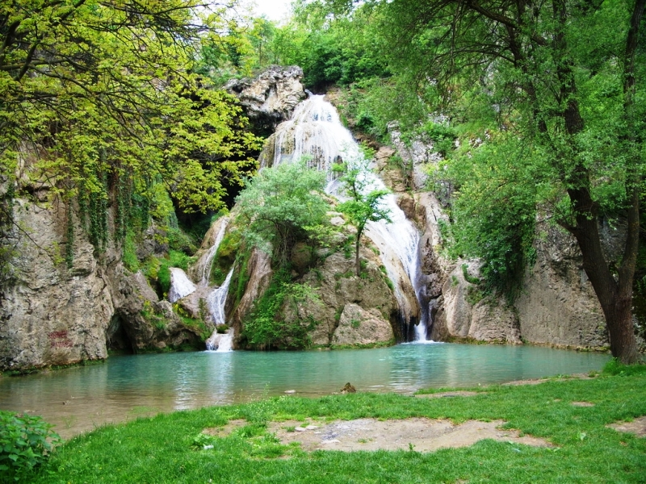

За резервата
Резерватът „Камчия” включва блатата Лесински азмак с площ ок. 2 кв. км и Мазния азмак с площ 1,4 кв. км, които са останки от стари речни ръкави, естествено свързани с реката. В тях се срещат бяла и жълта водна лилия. А също така и блатото Камчийска (Венелинова) балта с площ площ 1,23 кв. km и Карабурунското (Крушевското) блато, което е превърнато в рибарници с площ 1,2 кв. км. Резерватът се намира на около 25 км южно от Варна, в близост до курортите „Камчия” и „Шкорпиловци”. Камчия е обявен за резерват с Постановление от 29 юни 1951 г. на Министерството на горите. Заради важното си природозащитно и екологично значение в периода 1977 – 2017 г. е включен в световната мрежа от биосферни резервати като част от програмата „Човек и биосфера“ на ЮНЕСКО за опазване на най-представителните екосистеми на планетата. Целта е запазването на лонгозните гори по долното течение на река Камчия.
Флора
В горите и блатата на резерват „Камчия” се срещат 245 вида висши растения. Лонгозните гори са единственото находище на българския ендемит грудеста горва (Cardamine tuberoza). В лонгозната гора се срещат около 40 вида дървета: летен дъб, елша, бяла топола, дива круша, върба, мъждрян и др., но преобладават полски бряст и ясен. Голяма част от дърветата са на възраст над 150 години и с височина над 35 метра. Храстите са представени от червена къпина, глог, шипка, дрян, леска и др. От особено голямо значение са и лианите, които образуват завеса на по-влажните места. Те са представени от скрепка, дива лоза, имел и др. На територията на резервата се намира едно от най-големите находища на блатно кокиче в България.
Фауна
Река Камчия е обитавана от 39 вида риби, като основно преобладаващи са представителите на семейство Шаранови. Сред земноводните, които посетителите на резервата могат да срещнат, са обикновена блатна костенурка (Emys orbicularis), шипоопашатата (Testudo hermanni) и шипобедрената сухоземна костенурка (Testudo graeca). В района са установени 258 вида птици, което представлява около 66% от видовото многообразие в България. В резерват „Камчия” се размножават няколко редки за България и Европа птици, като черния щъркел (Ciconia nigra), малкия креслив орел (Aquila pomarina), сокол орко (Falco subbuteo) и други. Оттук минава и миграционният път Via Pontica.
Климат
Климатът в резервата е умереноконтинентален, средната януарска температура е 1,2°С, а средната юлска е 23°С. Заради близостта до морето средната влажност на въздуха е висока – около 75-80%. Най-характерно за лонгозната гора са периодичните заливания, които са свързани с промените в нивото на река Камчия.